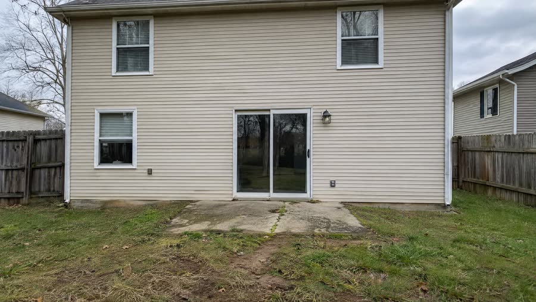
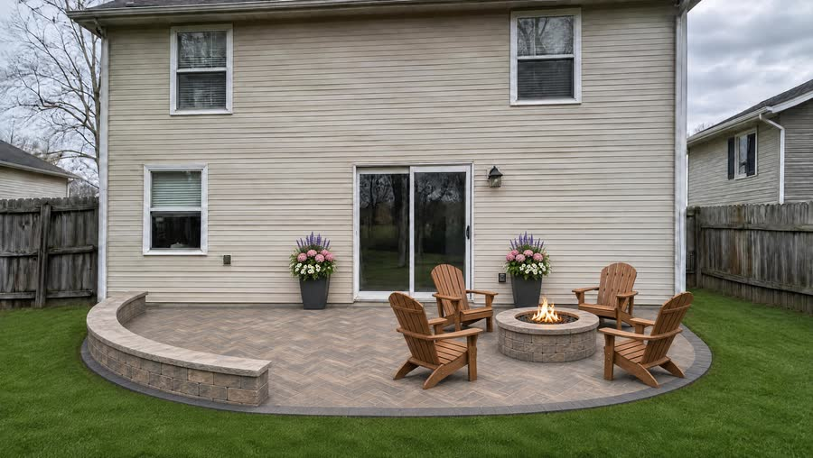

Design and installation
Hardscape
Custom walkways, patios, retaining walls, steps, driveways and outdoor kitchens, in pavers, natural stone or concrete. No cookie-cutter layouts: each one is drawn for the property it sits on.
- Natural stone and paver patios
- Walkways and driveways
- Retaining walls and garden walls
- Steps and raised landings
- Fire pits and outdoor kitchens
- Masonry, natural and faux stone